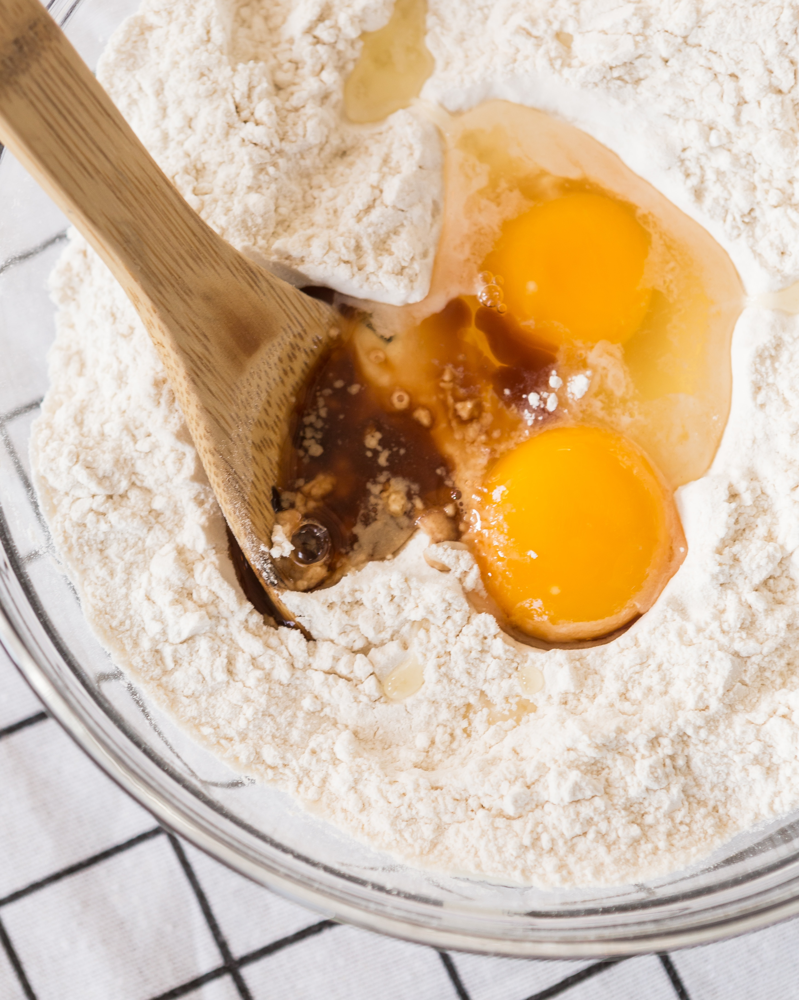
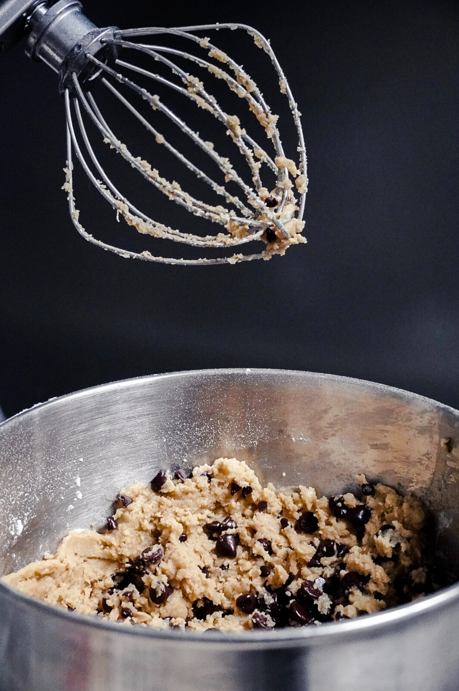

<!--
  Alex Burmeister
  DES 070 9/21/23
  Project 2: How to Website
-->

<!DOCTYPE html>
<html lang="en>
  <head>
    <meta charset="utf-8" />
    <meta http-equiv='cache-control' content='no-cache'>
    <meta http-equiv='expires' content='0'>
    <meta http-equiv='pragma' content-'no-cache'>
    <meta name="viewport" content="wideth=device-width, initial-scale=1.0" />
    <!--CSS FILE-->
      <link rel="stylesheet" type="text/css" href="styles.css" />
    <!--Yeseva One FONT-->
      <link rel="preconnect" href="https://fonts.googleapis.com">
      <link rel="preconnect" href="https://fonts.gstatic.com" crossorigin>
      <link href="https://fonts.googleapis.com/css2?family=Yeseva+One&display=swap" rel="stylesheet">
    <!--Josefin Sans FONT (Regular 400)-->
      <link rel="preconnect" href="https://fonts.googleapis.com">
      <link rel="preconnect" href="https://fonts.gstatic.com" crossorigin>
      <link href="https://fonts.googleapis.com/css2?family=Josefin+Sans:wght@300;400&family=Yeseva+One&display=swap" rel="stylesheet">
    <!--WEBSITE TITLE-->
      <title>How to Bake Delicious Chocolate Chip Cookies</title>
  </head>
  
  <body class="font2">
<!--Block #1-->
    <div class="wrapper">
      <!--TITLE BLOCK-->
      <div class="title">
        <h1 class="font1">How to Bake<br><div class="capText">DELICIOUS<br></div> Chocolate Chip <br><div class="capText">COOKIES</div></h1>
      </div>
      <!--TITLE IMAGE-->
       
    </div>
    

<!--Block #2-->
  <div class="wrapper">
    <!--INGREDIENTS IMAGE-->
     
    <!--INGREDIENTS-->
    <div class="ingredients">
      <h2 class="font3">Ingredients:</h2>
        <ul>
          <li>1 cup (2 sticks) <i>unsalted</i> butter, softened</li>
          <li>3/4 cup granulated sugar</li>
          <li>3/4 cup packed brown sugar</li>
          <li>1 teaspoon vanilla extract</li>
          <li>2 large eggs</li>
          <li>2 1/4 cups all-purpose flour</li>
          <li>1 teaspoon baking soda</li>
          <li>1/2 teaspoon salt</li>
          <li>2 cups chocolate chips</li>
        </ul>
      </div>
  </div>

    
<!--Block #3-->
<div class="wrapperI">
  <!--INSTRUCTIONS-->
  <div class="instructions">
    <h2 class="font3">Instructions:</h2>
      <ol>
        <li>
          <b>Preheat the Oven:</b><br/>
          Preheat your oven to 375&deg;F (190&deg;C). Line baking sheets with parchment paper to prevent sticking.
        </li>
        <li>
          <b>Cream the Butter and Sugars:  </b> <br/>
          In a large mixing bowl, beat the softened butter, granulated sugar, packed brown sugar, and vanilla extract together until the mixture is creamy and smooth.
        </li>
        <li>
          <b>Add Eggs:</b><br/>
          Beat in the eggs, one at a time, mixing well after each addition until the batter is well combined.
        </li>
        <li>
          <b>Combine Dry Ingredients:</b> <br/>
          In a separate bowl, whisk together the all-purpose flour, baking soda, and salt. Gradually add this dry mixture to the wet mixture, mixing until just combined. Be careful not to overmix.
        </li>
        <li>
          <b>Add Chocolate Chips:</b> <br/>
          Gently fold in the chocolate chips using a spatula or wooden spoon. Make sure the chocolate chips are evenly distributed throughout the dough.
        </li>
        <li>
          <b>Scoop the Dough:</b> <br/>
          Use a cookie scoop or a spoon to drop rounded tablespoons of cookie dough onto the prepared baking sheets. Leave some space between the cookies to allow for spreading.
        </li>
        <li>
          <b>Bake the Cookies:</b><br/>
          Place the baking sheets in the preheated oven and bake for about 9 to 11 minutes, or until the edges are golden brown but the centers still look slightly soft. Remember that cookies will continue to bake a little after you take them out of the oven due to residual heat.
        </li>
        <li>
          <b>Cool and Enjoy:</b><br/>
          Remove the baking sheets from the oven and let the cookies cool on the sheets for a few minutes before transferring them to a wire rack to cool completely.
        </li>
        <li>
          <b>Serve:</b><br/>
          Once the cookies are completely cool, they are ready to be enjoyed! Serve with a glass of milk or your favorite beverage.
        </li>
      </ol>
    </div>
    <!--INGREDIENTS IMAGES-->
     
     
  </div>


<!--Block #4-->
<div class="wrapper">
  <!--TIPS IMAGE-->
   
  <!--TIPS-->
  <div class="tips">
    <h3 class="font3">Tips</h3>
    <ul>
      <li>For <i>extra</i> flavor, consider adding chopped nuts like walnuts or pecans to the dough.</li>
      <li>You can use different types of chocolate chips or chunks, such as milk chocolate, dark chocolate, or white chocolate.</li>
      <li><i>If you prefer softer cookies,</i> slightly underbake them by reducing the baking time.</li>
      <li>Store any leftover cookies in an airtight container to maintain their freshness.</li>
    </ul>
  </div>
</div>

<!--
  <div class="wrapper">
    <b>Now you're all set to bake a batch of delicious chocolate chip cookies!</b>
  </div> -->
</body>


  
</html>
